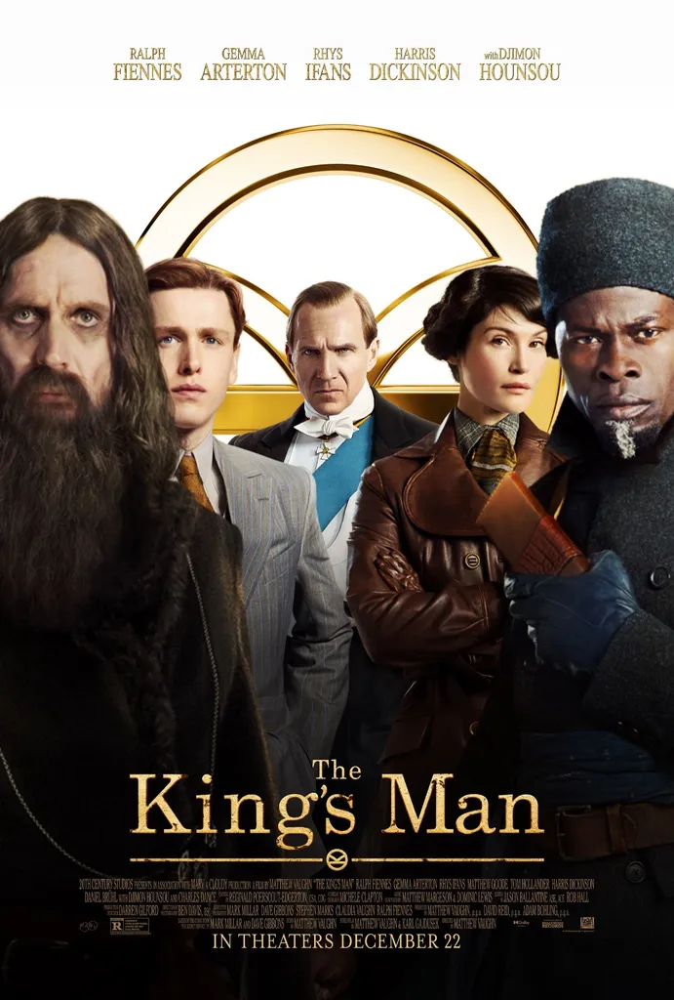
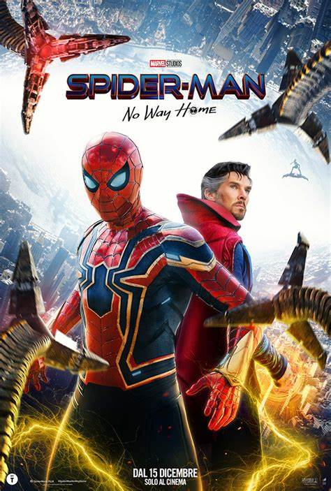
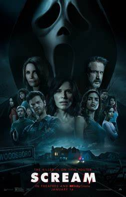

Sing 2
Petualangan Buster Moon dan teman-temannya kembali, kali ini mereka harus membujuk bintang rock Clay Calloway untuk bergabung dengan mereka untuk sebuah pembukaan pertunjukan baru.

Ketika kumpulan tiran terburuk dan kriminal berkumpul untuk merencanakan perang untuk melenyapkan jutaan orang, seorang pria - dengan bantuan putranya, para pembantunya yang dapat dipercaya, dan gaya untuk menyisihkan - harus berpacu dengan waktu untuk menghentikan mereka.
Identitas Spider-Man sekarang sudah terungkap, dan Peter meminta bantuan Doctor Strange. namun sebuah kesalahan terjadi, dan itu justru mengundang musuh berbahaya dari dunia lain, mereka mulai bermunculan. Hal itu memaksa Peter mencari apa makna sebenarnya menjadi Spider-Man.
Dua puluh lima tahun setelah serangkaian pembunuhan brutal mengejutkan kota Woodsboro yang tenang, seorang pembunuh baru telah mengenakan topeng Ghostface dan mulai menargetkan sekelompok remaja untuk menghidupkan kembali rahasia dari masa lalu kota yang mematikan.
Petualangan Buster Moon dan teman-temannya kembali, kali ini mereka harus membujuk bintang rock Clay Calloway untuk bergabung dengan mereka untuk sebuah pembukaan pertunjukan baru.